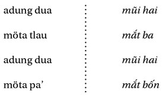
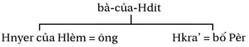

Chương 13
Trong môi trường rừng của mình, cô gái-rừng giống như một hòn đảo văn hóa; nàng không phải là người đi săn, nhưng các loài thú sợ nàng; ngược với hổ cái, nàng không bao giờ làm đổ máu. Người thợ săn, bằng sách lược của mình và các lễ thức liên minh khiến anh kết thân với hổ, với những đồ lề làm cho anh ta gần như là một chiến binh, gắn liền với máu, với cái chết và những rủi may; các loài dã thú không sợ anh ta lắm, con người thì bao giờ cũng dè chừng anh ta một ít vì sự gây hấn của anh ta cũng có thể hướng vào họ. Đấy là trường hợp của những người “thợ săn khác”: những phù thủy hại người, mà người ta bảo rằng họ “bắn” người ( pönah , bắn bằng một vũ khí phải kéo ra, chủ yếu là cây cung) giống như người thợ săn bắn con mồi hay người chiến binh bắn kẻ thù, và những ma lai mê hoặc hút máu người và sự sống.
Người ta trở thành phù thủy-bắn người, pöjau dèng , như thế nào? Đây là điều được bố-của-Ta’ giải thích; ông là một người Giarai, hậu duệ của những người nô lệ, đã giàu lên một cách lạ lùng, người chung quanh chẳng mấy tin cậy.
Người muốn trở thành pöjau dèng phải đến xin một người thầy, là phù thủy gốc; phải biếu ông ta một con gà mái và một ché rượu. Sau khi đã đọc một lời khấn, ông thầy cho người thành viên mới một củ thuốc để ăn; sau đó, ông trộn trong một bát rượu gạo cái gan gà và một hòn sỏi ( dèng , “hòn đạn” mà anh ta sẽ bắn) và cho anh ta uống tất cả những thứ ấy. Rồi hai người đi ra, giữa ban đêm; người mới học nhắm một thân cây chuối, đưa thẳng cánh tay ra theo hướng đó, khạc viên sỏi ra. Họ xem kết quả ngay tại chỗ: cây chuối bị thủng, viên sỏi đã đâm vào thân cây. Lần thử thách thứ hai xác nhận kết quả lần đầu; lần này, là một cọng tranh; người mới học lấy nước miếng thấm vào cọng tranh, uống rượu, thổi ba lần trên hai cánh tay. Rồi, anh ta đi bắn vào một cây chuối; cọng tranh cắm vào thân cây chuối. Ông thầy tuyên bố: “Bây giờ mày có thể lấy bệnh ra khỏi thân người ta rồi. Khi mày thật sự trở thành phù thủy, Mày sẽ biếu ta một con trâu! Phải nhớ, có những điều cấm: trong ba ngày ba đêm mày không được ngủ, khi có người chết cũng không được ngủ, nếu không mày sẽ trở thành röhung (ma lai), đừng đi ra mộ, đừng đi qua dưới nhà giữa các cây cột, đừng đi qua dưới một cành cây chìa ra! Không được bắn lung tung vào người ta, phải gượng nhẹ với người giàu và người quyền thế. Nếu quả cái này (dèng, vũ khí của anh ta) khiến mày ngứa ngáy quá, thì vào rừng mà bắn, để đừng có chạm phải ai!”
Người đã làm nghề này là bố-của-Hnyao; ông ta đã đào tạo nhiều người khác, bao giờ cũng là lén lút, để không ai biết; nhưng rồi tiếng đồn, sự việc lộ ra. Thời kỳ người Pháp ở Cheoreo có người đi kiện ông ta; ông ta bị tù ở Pleiku. Từ ngày giải phóng, không ai đến học ông nữa, nhưng ông thì vẫn làm nghề phù thủy, và người ta vẫn đến gọi ông khi có người ốm. Nếu ông tiên đoán là chết, thì người bệnh sẽ chết; nếu ông bảo sống thì người bệnh sẽ khỏi. Tuin là một trong những người được bố-của-Hnyao đào tạo, đúng hơn là con rể ông. Trong khi đi ngang làng Phu đến nhà bố- của-Hnyao ở làng Ju’, Tuin bắn (pönah) vào một cô bé đi lấy nước về; trúng ngay tim. Cô bé chạy về nhà vừa rú lên. Bố mẹ cô bé gọi bố-của-Hnyao. Ông này đến, thấy cô bé có một cái đinh trong tim. “Nó không sống nổi đâu! - Thì cứ lấy đinh ra đi! Nhưng mà ai đã nhắm bắn nó thế? - Đó là Tuin, người Cheoreo!” Ông ta lấy chiếc đinh ra; cô bé chết. Bố mẹ cô đòi Tuin đền tám con trâu, nhưng anh ta chỉ trả bốn (Tl. 9. 64).
Đây là trò chơi nguy hiểm, các ông thầy dạy biết thế và cảnh báo; không được làm hỏng nghề. Người phù thủy loại này “bắn” vào người ta, nghĩa là tự mình gây ra bệnh mà sau đó người ta lại phải cầu đến anh ta chữa và phải trả công. Tiến trình như sau: pönah bắn - swai ’ lấy ra - bbong ăn lãi. Vật được bắn đi gọi là dèng , hay hnim , một cái hạt (sỏi, dằm, sắt) mà chúng ta thấy người chữa bệnh giỏi lấy ra để cho lành bệnh. Người Giarai (ngoài những người có học ở các thành phố) đều tin sự tồn tại và hiệu quả của hnim, ngay cả khi họ thấy người chữa bệnh cho hòn sỏi vào mồm mình trước khi hút nó ra khỏi người bệnh nhân; động tác là tượng trưng, còn bệnh thì có thật, lành bệnh là chuyện đôi khi có thể thấy được.
Người phù thủy-bắn gây cái chết từ xa, nhưng ông ta không được đến gần cái chết; từ đó mà có những cấm kỵ liên quan đến mồ mả, đến phía bên dưới nhà, ở đấy có thể có phân rác rơi xuống, không được đi qua dưới một cành cây (nguy cơ một cái gì đó rơi xuống trên đầu, cũng như chúng ta sợ “đi qua dưới một cái thang”). Vi phạm cấm kỵ thì hậu quả rất nặng, do khả năng có thể chuyển từ vai trò phù thủy sang trạng thái röhung - là hai phần được nói đến trong chương này.
Bằng chứng trên sẽ không đủ cho tôi, nếu bố-của-Tré, một ông cụ già hiền minh, sau đó không mang đến cho tôi một lô thông tin khá kỳ lạ:
Nếu có ai đó thấy đau, họ đi đến nhà Chan (chính Chan đã cho tôi biết). Chan lấy một quả trứng, cho nó lăn đến chỗ người bệnh, rồi đập nó ra trên một tấm lá chuối. Ông nhìn vào cái thứ nước đó; nếu ông thấy ở đó hình một cây cột nhà mồ, thì người bệnh sẽ phải chết; nếu không thì ông sẽ chữa cho. Ông lấy một lưỡi rìu, bôi mỡ lợn lên, cho vào lửa; khi rìu đã nóng và mỡ sôi lên, ông lấy bàn chân đạp vào đấy rồi đặt bàn chân ấy lên người bệnh nhân. Hai hay ba lần như vậy là khỏi bệnh. Chan là một pöjau dèng.
Những người “biết dèng” bắn [pönah] vào những người mà họ muốn hại; những người “biết bbang” thổi vào lòng bàn tay, theo hướng đã nhắm, và đọc: “Mày, hãy đi đến kia!” Hai thủ thuật đó là ngón nghề chính của hian, có thể học được. Tất cả những người pöjau đã học như vậy, thì được mọi người sợ; những người pöjau chân chính thì biết được bệnh qua giấc mơ, họ không đáng sợ. Trong vùng chúng tôi, nhiều người đi học ông dèng ở làng Ju; Mlei dạy họ, còn chính ông thì đi học ở người Hödrung. Trẻ già, trai gái đều đi học “bắn”.
Người ta đi học thuật hian ở Jal-Nal, gần Lào - người Lào biết thuật này giỏi hơn cả; một cái thắt lưng họ làm thành một con rắn, họ đánh con rắn thế là lại trở thành thắt lưng. Từ khắp nơi người ta đến đấy để học, người Giarai, người Bana, người Hödang, người Mơnông, và ở đấy mọi người chỉ nói một thứ tiếng, không phải là tiếng Giarai hay tiếng Lào, mà là tiếng nói của các yang (yang dlei, thần rừng, hay yang römung, thần hổ). Người ta ở lại nhiều năm tại nhà thầy, làm việc cho thầy; có những ngày dành cho việc tập luyện. Như thầy bắt đi [chân trần, đương nhiên, bao giờ cũng vậy] trên một thân cây gạo gai to được đốn xuống, từ đó phải nhảy xuống một bãi chông nhọn; rồi, từ trên một cây cao, nhảy xuống những cây giáo cắm dưới đất. Nếu người học trò chần chừ, thầy sẽ đẩy anh ta xuống; nếu anh ta bị thương, thầy sẽ chữa bằng một loại cây thuốc. Sau đó những người học trò đi vào rừng tìm hổ và đánh nhau với chúng.
Một người biết thuật hian, thấy trên đường những bã măng tre đã bóc vỏ. “Con mụ đàn bà nào rải các thứ bẩn ra cả giữa đường thế này!” Anh ta nhặt một miếng, nhai, và thổi để ném [hra’ ném, đặc biệt là ném cây giáo] phù chú. Chính vợ anh ta, ở nhà, bị trúng ngay vào giữa tim. Về nhà anh nhận ra, khi thấy những mẩu măng tre; anh ta không ngờ là vợ mình. Chỉ biết cách bắn, chứ không biết cách chữa, anh cầm một chiếc áo của vợ và đi tìm một người bạn chữa bệnh. “Hãy về nhà đi, vợ mày chết rồi!”
Thuật muan là học được của loài cóc. Một con cóc ngồi dưới một cái cây. Nó rình một con rết trên một cành cây; nó muan [mở và khép môi lại, nhiều lần], con rết rơi xuống và nó chỉ còn việc xơi luôn. Người ta cũng làm như thế khi muốn giết một người nào đó. Có thật đấy, không phải chuyện truyền thuyết (akhan) đâu.
Người biết gom thì ném phù chú ra chỉ bằng lời nói thôi. Chỉ cần họ nói với một người nào đó: “Sao khỏe thế! Mày sẽ sống lâu đấy!” là vài ngày sau người ấy chết. Còn nếu họ nói: “Hổ sẽ ăn thịt mày đấy”, thì người kia sẽ chẳng có chuyện gì cả. Lời nói [cố ý ngược nghĩa] có hiệu lực nhờ có một sự pha chế (jörao): hòn viên đất núi, rưới rượu cần, dùng một con dế mèn [để làm vật phun], và giữ trong một ống tre giấu trong rừng. Hiệu quả không cứu chữa được, trừ phi là biết cách làm cho dế mèn say mèm (Tl. 5. 66).
Bao nhiêu là phương cách tưởng tượng ra “để mà giết” (ý đồ được bộc lộ rõ và lặp đi lặp lại)! Trong một xã hội ở đó cuộc sống không phải lúc nào cũng màu hồng, tình cảm cũng không phải lúc nào cũng êm ái, còn hiểm nguy không chỉ do từ rừng, mà còn từ cái “xa lạ” (người Giarai ở một làng bên cạnh, mà người ta không biết rõ), phải chăng nên là “người đi săn” để không phải làm con mồi? Trong thực tế, chính bằng chiến lược đó, và những kiểu có liên quan khác, mà người Giarai, với những thuốc độc đáng ngại, đã buộc các tộc người bản địa khác và cả những quốc gia lớn láng giềng phải nể sợ.
Trong cuộc sống hằng ngày, phải nhớ không bao giờ được khen một người Giarai tươi tỉnh và khen ruộng của anh ta tốt; anh ta có thể cho là có ý xấu, anh ta không thể biết người nói đó có những quyền lực phù phép gì không.
Khi bố-của-Tré nói rằng “nhiều” người Giarai đã được học phép thuật, không nên nghĩ rằng phần lớn người Giarai là phù thủy; song, điều đáng chú ý ở đây, là những gì họ tưởng tượng. Khi người ta không thật hiểu nhau, thì người ta nghi ngờ; khi một tai họa xảy đến, thì tất phải có một nguyên nhân; khi đó người ta đi tìm trong một vòng tròn các mối quan hệ ít nhiều thu hẹp lại. Duy trì hình ảnh người phù thủy có mặt khắp nơi, với ưu thế của sự hoài nghi, là làm cho mình được nể trọng và có thể kết tội.
Những người phù thủy “săn người” bằng cách bắn, thổi hay bằng lời nói đó, đối nghịch với những người pöjau “chân chính” ( pöjau bia’ ); tuy nhiên, cả hai đều được liệt vào hàng những người pöjau , cứ như, đối với một người Giarai, gieo cái chết hay đem lại sự sống (những kẻ giết người và những người chữa bệnh) đều nằm chung trong một dãy - nếu ta có thể nói là ở hai đầu mút của dãy. Tôi cũng chú ý có một sự nhập nhằng như vậy ở các yang dlei có thể là những con hổ cái ghê tởm mà cũng có thể là các cô gái-rừng yêu quý. Chẳng thể nào biết được; vả chăng, nói cho cùng thì cái chết cũng là một phần của sự sống. Có điều những người thợ săn kiểu mới này cũng không khác xa lắm những người mögap vốn kết ước với hổ; chỉ có điều họ đi xa hơn, thực sự chơi cái trò chơi của hổ: săn người. Đến cực ranh giới họ là những người-hổ, như trong câu chuyện sau đây, hay röhung là loại không chỉ giết mà còn ăn cuộc sống của những người khác, như chúng ta sẽ thấy về sau.
Hlany là một người vợ pöjau -römung; cô ta cưới một con hổ, nhưng cô cũng có một ông chồng Giarai; vậy là có một người Giarai và một con hổ. Ngày xưa, ở đây có rất nhiều hổ. Khi có người ốm, người ta gọi chúng [cô nàng, hay con hổ của cô?]; vừa nhắc đến tên, là chúng có mặt ngay tại chỗ.
Hôm đó là ở nhà mẹ-thằng-Bu. Trong ngôi nhà dài, người ta ngăn cho nó một căn buồng bằng những tấm chăn. Khi chúng đến người ta nghe có tiếng rít, rồi một tiếng hổ gầm: Grrr có mùi lính, rrr có mùi lính! Không được có bọn người đó ở đây! Hôi mùi xà phòng quá!” Rồi, nói với người bệnh: “Đây là do các vị tổ tiên đây; phải cúng một ghè rượu và một con lợn, thì sẽ lành.”
Bố-thằng-Büi rót rượu cho họ trong một cái bát và đưa qua sau tấm chăn. “Mẹ ơi, đây là rượu của mẹ!” Ông không nhìn thấy ai cả, nhưng cảm thấy một bàn tay lông lá cầm lấy bát; chỉ toàn là lông (Tl. 7. 67).
Ta đã hiểu điều cần hiểu: đây là một con hổ; và nó luôn ở đó, lắng nghe ta, ngay khi vừa gọi là đã có ngay trong nhà. Người ta gọi nó là “mẹ” để nó không tấn công ta, cũng giống ta gọi lũ kiến đỏ khi người ta lấy tổ kiến (nấu cháo ngon tuyệt). Dường như người ta cần nhân vật nhập nhằng nước đôi đó, chắc chắn là có những quyền lực vượt qua chúng ta. “Người ta” đây là người Giarai bình thường, con người đi trên đường, không phải là thợ săn mögap , cũng không phải là phù thủy pöjau , sợ mọi thứ ở mọi người, bởi làm sao biết được ai là ai. Không phải là người Giarai sống trong nỗi khiếp sợ, chẳng hề như vậy đâu, nhưng anh ta cần có những chỗ dựa; cho nên anh tìm nhiều mối liên minh.
Người đàn bà, được nhắc đến ở đầu tài liệu này, được kể là có hai chồng, một người Giarai và một con hổ; đấy chính xác là tình thế của những người bị ám möyut (xem quyển III). Trong cái lô-gíc này của cõi mơ tưởng Giarai, không thể cắt rời các sự vật ra mà sau đó các lối cắt khác không xóa đi những nhát cắt trước. Bảng chỉ dẫn ở cuối sách cho phép độc giả có thể tìm những lối đi qua khác.
Nghiêm trọng hơn các phù thủy-hổ (nam hay nữ) có khả năng, nếu không chữa lành bệnh, thì cũng giúp người ta vượt qua được một tình thế khó khăn bằng một lễ cúng thích hợp, là trường hợp ma lai röhung (nam hay nữ) chỉ biết hủy hoại - ít ra là nó phải được hình dung như vậy để mà cân bằng các thế lực, giữa làng và rừng, giữa người và hổ, giữa cái hữu hình và cái vô hình; ta biết rằng tư duy Giarai rất sợ sự gián đoạn.

Người ta trở thành röhung , hút-bơm máu và sự sống như thế nào? Người Giarai giải thích theo nhiều cách khác nhau. Trạng thái của röhung là sự thái quá của dèng , ham muốn đi săn (đối với đàn ông), khát máu, say mê hủy hoại, điên rồ ngấu nghiến. Nếu ta tưởng tượng ra nó, ấy là vì ta cảm thấy có cái ấy ở một nơi nào đó trong chính ta.
Con người Giarai. Anh ta phải có đôi để mà hoàn chỉnh. Huyền thoại đã đặt họ thành những nhân vật hai anh em, hai chị em, thực ra chỉ là một - vả chăng đấy là một phương cách thông thường trong lối văn truyền khẩu của các ngôn ngữ đơn âm tiết hay có hai âm tiết, chỉ một đôi mới thật sự có ý nghĩa. Trong chính bản chất của nó cá thể là pô, cái mà ta nhìn thấy (không chính xác là “thân thể”, được gọi là droi, cũng không phải là một “bề ngoài”, một “bóng dáng”, rup ) và böngat , phương diện khác của “cái tôi” mà cái chết không hủy hoại được. Böngat trước hết chỉ cái bóng con người mang theo, ánh phản chiếu trong nước (và, từ đó, hình ảnh trong gương, nhưng không phải là một hình vẽ hay một ám ảnh, gọi là rup) của mọi cơ thể, nghĩa là bao giờ cũng là một hình chiếu không sờ nắm được. Đối nghịch với pô đối với con người, böngat chỉ cái không nắm bắt được và là cái thường trực của mỗi con người. Một sơ đồ lý thuyết, được xây dựng trên một tổng thể nhiều huyền thoại, cho phép ta cụ thể hóa những phân biệt ấy: một nhân vật X ở trên một cái cây phủ bóng trên một làn nước trong đó hiện lên cái böngat của anh ta; Y thèm muốn anh ta, nhảy xuống nước; đương nhiên, anh ta tuột mất böngat , trong khi pô vẫn ở trên cây. Chuyển chiều đứng sang chiều ngang, X tắm và Y ham muốn anh (chị) ta, X ném nước cái xác lột hrum của mình cho trôi theo dòng, hay hình hài thấy được rup của mình, mà Y có thể nắm lấy, nhưng chẳng hề với tới được chút gì của X (X và Y thuộc hai giới tính khác nhau). Chỉ có các yang hay các röhung mới có thể nắm lấy được böngat , các thầy pháp thì có thể lấy lại và hồi phục lại böngat . B öngat dduai’ , một sự “rò rỉ böngat ” có thể có nghĩa là “tiếng rít trong tai”. Pô và böngat họp thành một cặp cấu thành, ở người bình thường, “trần trụi”, lung: ta biết ta đang gặp loại người nào.
Sau khi chết, cặp đôi này biến đổi. böngat được giữ lại ở lĩnh vực yang vô hình; nó có thể hiển lộ thành “ ma ” atau, dưới dạng pô cũ hay một dạng khác; là ma , nó có thể làm hại - đấy là chỗ nó khác với người “trần trụi” và gần với röhung , mà người ta cũng còn gọi là atau (đấy cũng là một trạng thái).
Vì những lý do sẽ nói sau đây, cặp đôi có thể hình thành bằng đối nghịch. Lúc đó sẽ không còn sự đơn giản của con người trần trụi, mà là tình trạng nhân đôi của con người “hai” (dua), sự nhân đôi của cá nhân (đúng hơn là của nhân cách). Đấy là trường hợp của röhung mà böngat khi đó gọi là bul và có thể hiện lên dưới hình thức chim săn mồi hay con dơi (giả-ma- lai?). Đối tượng, không bao giờ tự biết mình là röhung (và do đó), không có ý thức về những hoạt động của con người thứ hai của mình ra đi ban đêm, cũng giống cái böngat của người bình thường trong giấc mơ, nhưng ở đây chỉ là để làm hại người khác, để giết người. Tình trạng nhị hóa nhân cách này không phải là tình trạng của những người-hổ, chỉ chơi trò giả dạng, mà gần với trạng thái của người bị ám möyut (quyển III).
Theo một truyền thuyết, Ông Trời (Adei) gọi người lên làm việc trên cánh đồng của ông; để trả công, ông mời họ ăn một bữa ăn có nhiều loại thịt khác nhau; những ai ăn thịt người trở thành những người röhung đầu tiên và mọc một cái mồng trên đầu, khiến họ nhanh chóng bị nhận ra và bị tàn sát. Họ kêu với Trời, Trời làm mất cái mồng trên đầu họ đi. Ngày nay, chúng ta không còn biết ai là röhung [đơn giản là vì không ai có thể là röhung , nếu không phải là trong con mắt người khác].
Có những röhung di truyền, tình trạng của họ truyền lại theo thế hệ; đấy là những người ít nguy hiểm hơn. Những người khác là những röhung mới, họ được gọi là những tup “làm hại”, hay atau- röhung “ma ăn người”; họ bị như vậy là do ăn thịt ở chỗ một röhung , hoặc do bị một phù thủy ném bùa chú dèng , hoặc là người pöjau dèng đã không tuân thủ các cấm kỵ.
Con người thứ hai bul của kẻ ăn thịt người röhung lang thang về đêm để săn người; nó bắn để làm cho người ta bị ốm, vật phóng ra của nó gọi là “mũi tên”. Khi người bị nhắm bắn chết, con ma lai đến, như một con hổ, ăn thịt nạn nhân (còn các yang thì chỉ đoạt lấy böngat ); nó thay thế cái thân thể nó đã ăn, bằng một bó lá - khi đó sẽ lâu rữa - hoặc bằng một thân cây chuối - khi đó sẽ mau rữa, cả hai cách thì lá hay cây chuối đều có bề ngoài giống như người bị giết. Khi có người chết trong nhà, bao giờ gia đình cũng sợ có một con ma lai đến ăn xác. Tôi đã nghe kể trường hợp những người ngồi canh một người chết, họ nghe thấy có tiếng động dưới sàn nhà, họ đổ một nồi nước sôi xuống qua các nẹp sàn; sau đó có một người trong làng suốt tám ngày không bước ra khỏi nhà!
Ban đêm khi nghe tiếng chim lợn kêu: hiaak hiaak khek khek khek , ấy là dấu hiệu trong làng sẽ có người chết. Những quan sát lặp đi lặp lại đã khiến người ta thiết lập mối liên hệ này. Người ta bảo các röhung “cưỡi” chim lợn. Nếu nghe tiếng kêu của loài dơi gọi là “chó nhà trời” kiak kiak hiaao, thì đấy là một röhung đang đi qua và, trong các nhà, người ta kêu lên: “Đi về phía tây đi!” Các bậc cha mẹ ru böngat của các đứa trẻ đang thiếp ngủ:

thế là ma lai không thể chạm được đến đứa bé.
Các ghi chú sau đây cho phép ta xác định một loạt đối lập giữa röhung , thật khó khu biệt, và người phù thủy dèng ở đầu chương:

Trong thực tế, một thành viên của xã hội chỉ “thật sự” là röhung khi dư luận quần chúng có thể kết tội anh ta. A nói với B: “Hãy coi chừng N, nó là một người kép đấy!” B lặp lại điều đó... Rồi mọi tai họa trong làng đều đổ lên N.
Có những yếu tố khiến người ta nghi ngờ: một dáng đi kỳ dị, cái nhìn chăm chú, một tính khí hung bạo, lấy người nước ngoài, hay sự xa lạ quá mức (tôi đã bị coi là röhung vào thời đầu cuộc sống Giarai của tôi). Có những yếu tố xác nhận: bói toán, chiêm bao và nhất là cúng hiệu nghiệm. Như A sang nhà B, hỏi mua của anh ta một con lợn; B không đồng ý, A nài nỉ, rồi thôi. Sau đó con gái của B ốm; B cúng yang , đứa con gái không lành; rồi B cúng röhung , đứa con gái lành. Như vậy, A hẳn phải là röhung . B không giận cá nhân A, mà là giận cái hồn-ma lai của anh ta; tuy nhiên, chính A là người bị đuổi ra khỏi làng, hay bị người ta giết chết, bởi vì không có cách nào để chạm tới được mặt tai hại của con người kia.
Bên các con đường ở vùng Giarai, chỗ sắp vào làng, ta thường thấy một cái hũ đất nhỏ đặt ngay dưới đất, trước đó có một cái vỏ trứng cắm trên một cây đũa, hay một túm lông gà: đấy là một hình thức tượng trưng cho ghè rượu và thịt gà, dâng cúng một röhung lạ. Ghè rượu là “ở phía ta”, gà là “ở phía rừng” - tức phía làng bên cạnh, một làng ta nghi là có một röhung làm hại. Các vật cúng được đặt ở bên trái đường để cho kẻ kia, đến làng ta, sẽ thấy nó ở bên phải của họ. Khi bày những vật lễ ấy, người ta đọc lời khấn: Đây là gà và rượu, có cần để mà hút đấy - tôi khấn các thần cây lớn là nơi ở của các ngài - tôi mang đến cho các thần giá cuộc sống - hãy cho người bệnh được lành - tôi khấn các thần buổi hoàng hôn, các thần đêm tối, dơi ma lai - tôi không biết các ngài, dầu các ngài là ai - hãy cho khỏi bệnh, cho mát mẻ trở lại...
Lời khấn sẽ khác tùy theo người ta có biết tên người bị nghi ngờ là röhung đã gây bệnh hay không. Nếu người đó là röhung , nó sẽ chén thỏa thuê các món lễ vật và khỏe mạnh; nếu không phải, thì món lễ vật sẽ khiến hắn ốm. Trong trường hợp N bị nghi là ma lai, bố mẹ người bệnh sẽ cúng lễ vật cho riêng anh ta (đương nhiên không nói cho anh ta biết); nếu người bệnh lành, thì chắc chắn N là nguyên nhân gây bệnh, tức là röhung . Khi trong một làng, hay trong nội bộ chỉ một gia đình, nhiều người lên án coi N là ma lai, thì họ giết chết N. Đây là dịp giải quyết một vụ tranh chấp và người chuyên xử kiện đọc:

Nhờ có thầy bói, nhờ có giấc mơ, chúng tôi biết nó; đã nhận ra được nó. Người ta đã kết thúc đời nó trong rừng, người ta đã giết nó vì nó là röhung, vì nó là atau. Nó đúng là vậy, cho nên chẳng có chuyện gì cả; nó ăn người, việc đã giải quyết xong. Chẳng đáng giá đời hơn một con cào cào hay một con châu chấu. Vậy hãy cho một con trâu để ăn trên mộ, một con trâu cho vợ nó (chồng nó), một con lợn phí xử kiện.
Ma lai, con người kép có hai mũi và bốn mắt, bị giết như một con vật, nhưng với một món bồi thường nhỏ, như đối với con hổ; người ta “trả nó về trong rừng”. Trong trường hợp có nhầm và một người lành mạnh, không có lỗi, bị giết, thì món nợ sẽ là mười lăm trâu.
Có phải người Giarai là những người duy nhất nói về ma lai (nếu không phải là duy nhất có chúng)? Nhân vật Sre tương đương của röhung là cà’ (tiếng Mnông là caak mà G. Condominas dịch là: “phù thủy, ăn hồn người”) không phân biệt rõ lắm với sömri , người-hổ đã gặp, và có tương ứng là kiak trong tiếng Bana (Nam Á ở phía bắc - giữa những người Nam Á phía nam và phía bắc, thường có chuyển từ c sang k, như cal “gió” trong tiếng Sre thì là kial trong tiếng Bana); tuy nhiên, đối với người Bana, kiak có nghĩa của từ Giarai atau, người chết, vong hồn, ma, có thể làm hại, nhất là trong khi ngủ. Cà’ của người Sre có một phần là ma, một phần là người-hổ; thường được nói đến trong huyền thoại - trong các truyện kể thì nhiều lắm - hơn là trong đời sống thường ngày, mà dường như chúng phải bị loại ra (“chuyện phù thủy là để cho người khác”). Ở người Giarai thì ngược lại, ở đây huyền thoại nói về những người-hổ và ma, nhưng không có röhung , là một thực tế (một sự cần thiết?) trong đời sống xã hội; chuyện Tleng Lớn là một ngoại lệ:
Gia đình Tleng Lớn có vấn đề: gà mái không đẻ, heo nái không có con, con gái sinh con không sống được - Họ đi tìm thầy bói-soi đường, đó là mẹ-của-Cöhlir-Cömlan; bà chỉ phải dâng lễ cúng thích hợp - Về sau, các cô nàng Hbbon, Hyang, Hbban đi bán chiêng đổi lấy các jörao [cây dược liệu, thuốc mê?] của Tleng. Lúc đầu Tleng đắn đo, anh sợ các cây thuốc đó gây hại cho các làng chung quanh, quyền lực không thể kiểm soát được của chúng sẽ gây phiền cho anh - “Đừng lo, ông anh ạ, gió sẽ mang hơi bốc đi chỗ khác, cũng như nó đã thổi lá và những lời nói của chúng ta đi mất thôi” - Các cô gái mang các loại thảo mộc về và Tleng thì giữ lấy chiêng - Tleng bỗng muốn đi tắm ở dòng sông rộng, ngang làng các cô gái nọ - Các cô nhờ anh hái xoài: “Đừng làm rơi chúng từ trên cao! Hãy chúc đầu xuống dưới và cầm chúng ở tay!” - Bố các cô là một röhung, Hbbon và Hyang cũng vậy, các cô muốn ăn thịt Tleng Lớn; chỉ có Hbban không phải là röhung - Đúng như ý muốn của các cô, Tleng bị chết lúc leo xuống, đầu đập vào một tảng đá - Hbban kêu các chị: “Các chị giết chết anh ấy mất rồi! - Đi gọi bố ra đây nào!” - Hbban đi, Hbbon và Hyang liếm máu ở vết thương chết người của Tleng, máu trên đá - Trong khi đó, Hring, em gái của Tleng, nằm mơ thấy điềm xấu; cô nói với cậu em trai là Dhia’ Lhia’, cậu ta ra đi - Người bố của các cô gái röhung đem giấu các chiếc chiêng trong một cái ao; Hbban chỉ chỗ giấu ra - Mẹ của Tleng Lớn sinh một đứa con trai, bà đặt tên cho nó là Tleng Nhỏ - Tleng Nhỏ làm một nấm mộ rất đẹp cho anh; cậu ta đem treo Hbbon và Hyang lên hai cây cột nhà mồ, rồi cậu ta cưới Hbban (Hj. 116).
Bố-của-Bang, anh của bố-của-Dueng, là một người thầy bói, thế lực và giàu có, bị ông-của-Hlèm và bố-của-Pèr ghen tị. Cả nhà đều bị coi là röhung (và mãi đến hôm nay, năm 1965). Ông-của-Hlèm và bố-của-Pèr quyết định trừ khử bố-của-Bang. Họ tố cáo ông với người Nhật (lực lượng chiếm đóng lúc bấy giờ) và bố-của-Bang bị giết chết (Cheoreo, 1944). Khi người Pháp trở lại Đông Dương, Bang kiện, đòi bố-của-Pèr phải chết; trong thực tế, chính là bà-của-Hdit trả món nợ ấy bằng chiêng và nồi đồng.

Sự vụ trước đấy ở làng Ké còn có ý nghĩa hơn và vô cùng bi thảm hơn. Bố-của-Hpih cưới một người đàn bà thuộc thị tộc Ksor, khiến ông trở thành “cột trụ” trong làng; ông có thế lực giàu, và được kính trọng. Ông là một thầy “xử kiện”, được coi là liêm khiết.

Tất cả những người trong bảng tên đều thuộc thị tộc Kösor, trừ những người tên được viết nghiêng.
Người con gái thứ Hbrat đã nối dõi mẹ, nhà bà là “cột trụ” của làng; nhưng bà không được coi trọng. Con gái đầu của bà là Hyèp, lấy chồng ở Cheoreo và làm việc ở đấy; con trai bà là Ddeng học trường Sư phạm ở Buôn Ma Thuột; cậu em là một người đần độn bị coi là “điên”. Hbio, cô con gái thứ, lấy chồng Bana; làng không thích chuyện đó. Phiền toái vì một sự bài xích ngấm ngầm, cô ta tố cáo chồng là röhung . “Nếu cô giết tôi, thì vẫn còn cả nhà này là röhung !” Cô giao cho một người lính nhiệm vụ bắn chết chồng cô. Vụ giết người đầu tiên. Cậu con trai nhỏ của cô, Anyruai’, suốt ngày cứ chơi trò vót những cây xiên bằng tre. “Mày làm gì đấy? Vót xiên làm gì? - Để xâu thịt!” Người ta suy ra: Anyruai’ muốn ăn người.
Một đứa bé trong làng giữ trâu, nó (cố tình?) để trâu phá khu vườn của Hbrat, Hbrat thấy và mắng rất dữ. Mấy ngày sau, đứa bé chết; người ta bảo ngay rằng nó chết là do bị Hbrat ăn. Nhiều cái chết khác trong làng cũng được quy tội cho cô. Cứ mỗi lần có người ốm trong làng, là người ta lại cúng lễ cho Hbrat, được nêu tên rõ ràng, mà cô không biết; ngay cả Tiong, viên chức chính quyền cũng tham gia.
Hkiah, rồi Hnyao, cô chị, “cháu gái” của Hbrat đã ngán một bà cô mà cả làng kinh tởm; các cô lấy làm xấu hổ cho thị tộc Ksor của mình. Các cô đi xem bói: Hnuai ở làng Kè và Krai’ ở làng Glung (cả hai đều là Kösor): đúng Hbrat là röhung . Vậy là hai cô cháu, được sự đồng tình của họ hàng Kösor (trong đó có Tiöng) quyết định phải kết thúc; họ nhờ những người trong các gia đình có một người bị Hbrat ăn thực hiện: Kösor Hlo’, Hiao Töno’, Röcom Hô, Rahlan Bbièn, và nhất là Kösor Jao, kèm theo bốn học sinh cỡ mười lăm tuổi. Họ được giao nhiệm vụ tàn sát cả gia đình.
Đúng ngày đã định, trước tiên họ rình ở ruộng, giết chết Hbio, Phôn và Anyruai’, vào buổi xế chiều; họ bị đánh chết bằng gậy. Và chôn tại chỗ. Những người khác đi sang làng bên cạnh; trở về muộn. Giữa đêm, những người thực hiện công lý vào nhà, bóp cổ hay đập chết Hbrat, Thôn và Bling (người duy nhất có chống cự một ít); chôn xác gần làng. Sáu người chết trong mấy tiếng đồng hồ. Năm kẻ giết người không hề trốn tránh; làng và các già làng đồng tình với họ - nhưng đây là lần đầu tiên chính quyền can thiệp và họ bị bắt. Đấy là ngày 24 tháng Mười một năm 1966.
Trong trường hợp đau ốm, người Giarai thường tuân theo quá trình xem bói + cúng lễ, để tìm ra nguyên nhân căn bệnh và nắm bắt được nó; trong phần lớn các trường hợp, đó là một vị thần hay một người đã chết, gia đình người ốm đã xúc phạm mà không hay: một lễ vật dâng cúng sẽ đem lại sự lành bệnh. Nhưng khi việc bói toán chỉ ra một röhung , đã biết hay không biết, thì đối tượng chính sẽ là người này: nắm lấy một ai đó, làm “vật tế thần”, và người ta sẽ tìm ra ai đó thôi, bởi vì bao giờ trong làng cũng có một người bị cho là khó coi, một ma lai tiềm tàng.
Các dữ kiện dẫn đến lời giải cho một câu hỏi: tại sao lại tưởng tượng ra những câu chuyện như vậy (và bằng cách ấy), kết thúc bằng việc loại trừ hay giết người? Có khi có những gia đình kình địch tìm một cái cớ để thanh toán với nhau (đấy là trường hợp ở ví dụ thứ nhất) hay để trả thù một điều thiệt hại nghiêm trọng đã gây ra; nhìn chung, ấy là vì xã hội cần duy trì sự ngờ vực đối với những kẻ không-giống-như- mọi-người và do đó gây phiền nhiễu cho người ta. Xã hội cần có những cái cớ để loại bỏ họ, với sự đồng tình của những người hiền minh - người giết chết röhung có cả làng đứng về phía mình.
yang, atau hay röhung đều là tưởng tượng; nhưng phải tưởng tượng để mà sống tốt hơn - an toàn, như tất cả những người bảo thủ vẫn nói. Nỗi sợ khiến người ta giết. Nàng Hbrat khốn khổ (và hậu duệ của cô) cũng chẳng phải ma lai hơn tôi, nhưng cô hẳn đã làm cho mình không thể chịu nổi. Sự chọn lọc tự nhiên và sự chọn lọc văn hóa.
Ma-lai röhung là một cá thể tưởng tượng chia đôi, nó là nguy hiểm cho xã hội, bản sao của nó gây hại mà nó không biết; vậy nên phải vứt nó “vào rừng” (ra nước ngoài hay sang thế giới bên kia). Ngược lại, người bị ám möyut chỉ nguy hiểm cho chính mình, anh ta thực sự bị chia đôi và tự mình đi vào rừng. Cả hai đều được đặc trưng bởi tình trạng “vắng”, rökut, vắng cái böngat ; họ không còn biết những gì họ làm. Đấy sẽ có thể là chương đầu của quyển tiếp theo.